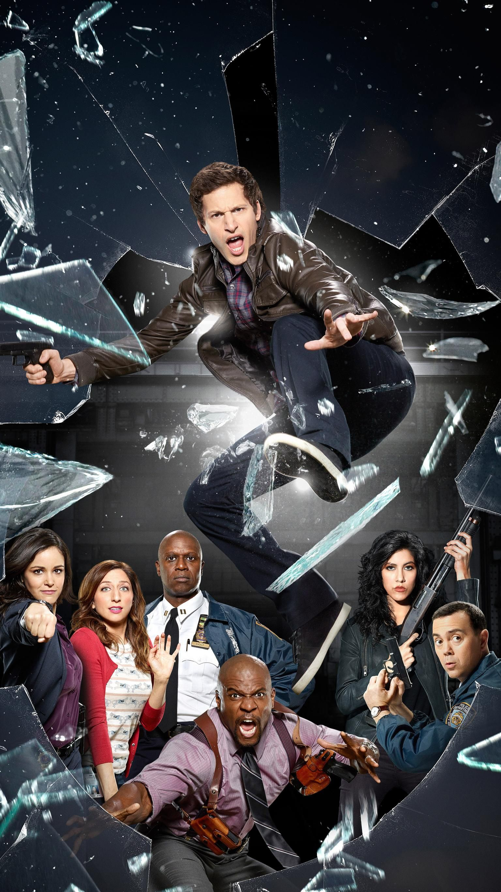

Situado na 99.ª delegacia fictícia do Departamento de Polícia de Nova York, no Brooklyn, Brooklyn Nine-Nine segue uma equipe de detetives liderados pelo capitão Raymond Holt (Andre Braugher), recém-nomeado e muito sério. Os detetives incluem Jake Peralta (Andy Samberg), que tem uma alta taxa de prisões bem-sucedidas e casos resolvidos, apesar de sua atitude relaxada, despreocupada e (às vezes) infantil. Ele finalmente se apaixona por sua parceira severa, nerd, amável, mas adorável, Amy Santiago (Melissa Fumero). O esforçado, mas tímido Charles Boyle (Joe Lo Truglio) faz parceria com a estóica, agressiva e severa Rosa Dias (Stephanie Beatriz). Os dois detetives mais velhos, Michael Hitchcock (Dirk Blocker) e Norm Scully (Joel McKinnon Miller) muitas vezes parecem incompetentes, estúpidos e preguiçosos, mas resolveram mais casos ao longo dos anos simplesmente porque estão trabalhando há mais tempo.
Os detetives se reportam ao sargento Terry Jeffords (Terry Crews), um gigante gentil e devotado homem de família que inicialmente tem uma fobia de voltar ao trabalho policial de campo ativo por medo de ser morto no cumprimento do dever e deixar suas filhas sem pai. A delegacia também inclui a administradora civil sarcástica e dominadora Gina Linetti (Chelsea Peretti), que não gosta de seu trabalho, prioriza suas mídias sociais e acredita que dançar é seu objetivo de vida.
trailer brooklyn nine-nine
Daniel Joshua Goor (nascido em 28 de abril de 1975) é um escritor de comédia e produtor de televisão americano. Ele escreveu para vários talk shows de comédia, incluindo The Daily Show , Last Call with Carson Daly e Late Night with Conan O'Brien . Ele também trabalhou como escritor, produtor e diretor da série do horário nobre da NBC Parks and Recreation , e é produtor executivo e co-criador da premiada série da Fox / NBC Brooklyn Nine-Nine .

Michael Herbert Schur (Ann Arbor, Michigan, Flórida, 29 de outubro de 1975) é um produtor de televisão e escritor estadunidense mais conhecido por seus trabalhos nas séries The Office e Parks and Recreation. Ele também é criador das séries Brooklyn Nine-Nine e The Good Place.
Conheça o elenco da série